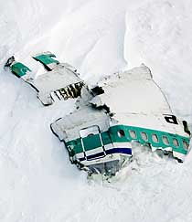

It was a clear and chilly morning in Auckland, New Zealand, on November
28, 1979. The bustling airport
was alive with the hum of travelers and the excitement of holiday-makers, business people, and tourists
preparing for their flights. Among them was Air New Zealand Flight 901, a special sightseeing flight
that promised to take its passengers on a breathtaking tour over the icy expanse of Antarctica. The
flight had attracted much attention, as it offered a rare opportunity for travelers to experience the
frozen beauty of the southernmost continent from the sky—a bucket-list trip for many of the passengers.
The flight was aboard a McDonnell Douglas DC-10, a wide-bodied airliner that was a popular choice for
commercial aviation in the 1970s. Its large windows provided a panoramic view of the world below, and
for this flight, the passengers were eagerly anticipating the views of the icy white landscapes of
Antarctica. There were 257 people on board—236 passengers and 21 crew
members, including Captain Jim
Collins, a seasoned pilot with over 10,000 hours of flight time. Captain Collins was
well-respected in
the aviation community, and his calm demeanor and professionalism had earned him a reputation as a
steady hand in the cockpit. Alongside him was First Officer David
Murray and Flight Engineer Noel
Howes, both highly trained and experienced in flying long-haul flights.
As the aircraft ascended, passengers were filled with a sense of awe, their faces pressed against the
windows, looking out over the rolling hills of New Zealand's South Island before heading out toward the
vast, remote reaches of the Antarctic continent. For many, it was a once-in-a-lifetime opportunity. The
flight was to be a smooth, scenic journey, cruising over the Antarctic ice shelf and offering passengers
unparalleled views of the region’s stunning glaciers and ice formations. The entire operation was
carefully planned, with the pilots thoroughly briefed on the flight path and expected conditions.
Everything was going as planned, and the anticipation was palpable as the plane turned southward,
heading toward the great unknown of the icy Antarctic wilderness.
But while the journey began like any other, no one on board could have known that they were about to be
caught in a deadly chain of events that would change the course of aviation history. The flight was
about to face a set of challenges that even experienced pilots and sophisticated navigational technology
could not overcome, and the beautiful, desolate landscape that would have been their destination was
about to become the site of a catastrophe.
Crash
By the time Flight 901 approached Mount Erebus, the conditions were
deteriorating rapidly. The whiteout
was becoming more intense, and the plane’s flight path was becoming less distinguishable. The aircraft
was on a course that, if continued, would take it directly into the side of Mount Erebus. However,
neither the crew nor the passengers had any idea of the looming danger.
As the aircraft descended through the thickening clouds, the crew became aware of a problem: their
instruments were not providing the accurate readings needed to avoid the mountain. They could
see
nothing outside the windows but a blanket of snow and mist. Their
decision-making was clouded by the
disorienting conditions, and crucially, they did not realize how close they were to Mount
Erebus. At
1:48 p.m., the unthinkable happened. The DC-10, still in the midst of its descent, collided with the
snowy slopes of Mount Erebus. The sound of the impact was deafening—a thunderous crash as the
aircraft
struck the mountain, breaking apart almost instantly. The force of the impact sent debris scattering
across the icy terrain, and the aircraft was consumed in a violent explosion.
Witnesses from nearby stations and the ground crews who had been tracking the flight described seeing a
massive plume of smoke rising from the peak. They knew something was wrong, but no one could have
anticipated the scale of the tragedy that had unfolded. The wreckage was scattered across the side of
the mountain, and search efforts began immediately. However, despite the efforts of rescuers, there were
no survivors. All 257 people on board had perished in the crash. In the coming days, the world would
come to learn of the magnitude of the loss, and the entire nation of New Zealand was left in shock.

Cause
The cause of the crash was the subject of a detailed investigation, carried out by the Royal Commission
of Inquiry. It became clear that the flight was not the result of mechanical failure or pilot error
alone. Rather, the crash was caused by a series of interconnected
factors, many of which stemmed from
poor communication between the airline’s operations team and the flight crew.
The primary cause of the crash was found to be miscommunication
regarding the flight’s route. The
flight path had been altered without proper notification to the crew. The flight plan had been changed
from the original route, but the pilots were never made aware of the adjustment. As a result, the crew
was unknowingly flying into a hazardous area, headed directly toward Mount Erebus. The flight’s flight
management systems, designed to guide the crew safely, were also affected by the poor weather, which
only added to the disorientation and confusion. The pilots, attempting to navigate through the blinding
whiteout, were unable to discern their exact location or their proximity to the mountain.
In addition to this failure of communication, the investigation revealed deficiencies in Air New
Zealand’s operational procedures. The airline had not ensured that all crew members had received proper
briefings about the changes to the flight path. In an already complex and dangerous environment, this
lack of communication created the perfect storm for disaster. The failure to recognize the risks posed
by the altered flight path, compounded by the whiteout conditions, led to the tragic consequences.
Aftermath
The aftermath of the crash left New Zealand in a state of national mourning. The scale of the tragedy was
unprecedented, and the loss of 257 lives, including 20 children and a number of international
passengers, sent shockwaves through the nation and the world. Families were left devastated, and the
grief was compounded by the mystery surrounding the crash. How had it happened? Why had the pilots been
unaware of the imminent danger? Why had the airline failed to ensure proper communication?
In the weeks following the crash, a massive recovery operation was launched to search for wreckage and
provide answers. The site of the crash was difficult to access, located in one of the most remote and
inhospitable regions of the world. Teams of military personnel and rescue workers braved freezing
temperatures, snowstorms, and treacherous terrain to recover the bodies of the victims and investigate
the wreckage. The search was grueling, and while there was no hope of finding survivors, the teams
worked tirelessly to bring closure to the families of the lost passengers.
The investigation revealed critical insights into the nature of the crash. It was not simply an accident
caused by a single mistake. Rather, it was the result of a series of systemic failures that had stacked
the odds against the flight crew. These included errors in flight planning, a failure to update the crew
with changes to the route, and a lack of clarity in the flight briefings. The Royal Commission
report led to widespread changes in airline procedures, not just in New Zealand, but globally, aimed at
preventing such a tragedy from ever happening again.
Legacy
The legacy of Air New Zealand Flight 901 lives on through the lessons learned from that fateful day. The
tragedy brought about significant changes in aviation safety protocols, especially in the areas of
flight planning, communication, and training. Airlines across the world reevaluated their safety
practices, and improvements were made to ensure that similar errors would not happen again.
The crash of Flight 901 became a turning point for aviation safety worldwide. The failure to properly
communicate flight changes to the crew, and the lack of awareness of the risks posed by whiteout
conditions, were crucial lessons that led to widespread reforms. Flight crews now receive much more
comprehensive training on weather conditions, flight planning, and how to handle unexpected changes
during flight. The reforms introduced in the wake of the Erebus disaster have helped to make flying
safer, and many lives have been saved as a result.
Though the loss of Flight 901 will always remain a painful chapter in New Zealand's history, the reforms
that followed have ensured that its legacy endures through the improvements in aviation safety that
continue to protect passengers around the world.